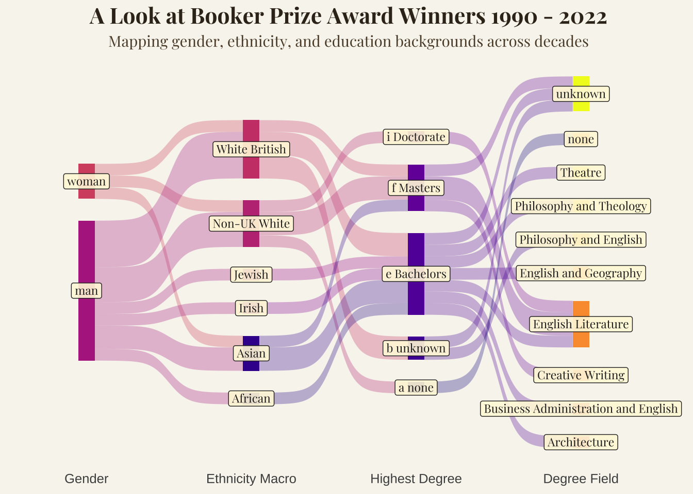

Here we load the prizes dataset from TidyTuesday and clean up missing degree entries. Then, we prefix degree names with letters (a–i) so we can later enforce a custom order - otherwise, ggsankey reorders them alphabetically.
Code
prizes <- readr::read_csv('https://raw.githubusercontent.com/rfordatascience/tidytuesday/main/data/2025/2025-10-28/prizes.csv') |>mutate(highest_degree =ifelse(is.na(highest_degree), "unknown", highest_degree)) |>mutate(highest_degree = forcats::fct_recode(highest_degree, "a none"="none","b unknown"="unknown", "c Diploma"="Diploma", "d Certificate of Education"="Certificate of Education", "e Bachelors"="Bachelors", "f Masters"="Masters", "g Juris Doctor"="Juris Doctor", "h MD"="MD", "i Doctorate"="Doctorate"))
Here we isolate Booker Prize data only and reshape it with make_long() to a “long” format suitable for ggsankey. Each column (gender, ethnicity, education, field) becomes a stage in the flow diagram.
booker |>ggplot(aes(x = x,next_x = next_x, node = node, next_node = next_node, fill =factor(node), label = node)) +geom_sankey(flow.alpha = .3,show.legend =FALSE) +geom_sankey_label(show.legend =FALSE,aes(hjust =case_when( x =="gender"~.7, x =="degree_field"~0,TRUE~ .5 ) ),size =3,family ="playfair", # serif, literary feelcolour ="gray15",fill =alpha("cornsilk", 0.9) ) +scale_fill_viridis_d(option ="C") +scale_x_discrete(expand =expansion(mult =c(0.15, 0.21))) +theme_sankey(base_size =12) +theme(legend.position ="none",axis.title =element_blank(),axis.text.y =element_blank(),axis.ticks =element_blank(),panel.grid =element_blank(),plot.background =element_rect(fill ="#f8f5ef", color =NA), panel.background =element_rect(fill ="#f8f5ef", color =NA),plot.title =element_text(family ="playfair",face ="bold",size =16,hjust =0.5,color ="#3a2e1f"# deep brown like old ink ),plot.subtitle =element_text(family ="playfair",hjust =0.5,size =11,color ="#5c4a34" ), ) +labs(title ="A Look at Booker Prize Award Winners 1990 - 2022",subtitle ="Mapping gender, ethnicity, and education backgrounds across decades")

This Sankey diagram explores how gender, ethnicity, and educational background intersect among Booker Prize award winners between 1990 and 2022. Each flow traces the path from an author’s gender to their ethnicity, highest degree, and finally, their field of study - revealing how academic and cultural backgrounds have shaped the landscape of British literary recognition.
The visualisation was built in R using ggsankey and customised extensively for a bookish, parchment-like theme. The categorical ordering of degrees (e.g., “a none,” “b unknown,” “e Bachelors,” etc.) was manually imposed to reflect an educational hierarchy, we weren’t able to figure out how to override the library’s settings when it came to within category ordering.
This week we are exploring data related to the Selected British Literary Prizes (1990-2022) dataset which comes from the Post45 Data Collective.
“This dataset contains primary categories of information on individual authors comprising gender, sexuality, UK residency, ethnicity, geography and details of educational background, including institutions where the authors acquired their degrees and their fields of study. Along with other similar projects, we aim to provide information to assess the cultural, social and political factors determining literary prestige. Our goal is to contribute to greater transparency in discussions around diversity and equity in literary prize cultures.”
Data Dictionary
prizes.csv
variable
class
description
prize_id
integer
Unique prize identifier used in the SBLP dataset.
prize_alias
character
Name of the prize awarded, regularized to the most current name.
prize_name
character
Name of the prize awarded, at the time of award.
prize_institution
character
Institution that sponsored the prize.
prize_year
integer
Year the prize was awarded.
prize_genre
character
Genre category of book that the prize was awarded to.
person_id
character
Unique author identifier used in the SBLP dataset, assigned in order of entity entry to the dataset.
person_role
character
Whether author was shortlisted or won the prize.
last_name
character
Family name of author.
first_name
character
Given name of author.
name
character
Full name author in family name, given name format.
gender
character
Author’s gender, as self-declared/publicly available.
sexuality
character
Author’s sexuality, as self-declared/publicly available.
uk_residence
logical
Whether the author holds residence status in the UK at the time of data gathering.
ethnicity_macro
character
Ethnicity macro category, as created for this dataset.
ethnicity
character
Ethnicity as self-declared/publicly available.
highest_degree
character
Highest level of post-secondary education.
degree_institution
character
Institution from which the highest degree was attained.
degree_field_category
character
Degree macro category, as created for this dataset.
degree_field
character
Field of study, as self-declared/publicly available.